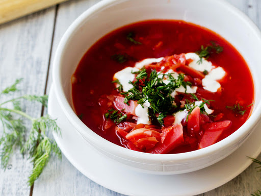

<!DOCTYPE html>
<html lang="en">
<head>
    <meta charset="UTF-8">
    <meta name="viewport" content="width=device-width, initial-scale=1.0">
    <meta http-equiv="X-UA-Compatible" content="ie=edge">
    <title>Document</title>
</head>
<body>
    
</body>
</html>
<td></td>
<td>
    <th>Вкусный борщ</th>
    <th>Обед для семьи</th>
    <th>Лучший рецепт!</th>
</td> 
</tr>
</table>
<hr>

<h2>Рецепт вкусного Борща</h2>
<!---борщик вкусный -->
<ul>
<!--ul вкусный борщ -->

    <li>300 г свежей белокочанной капусты;</li>
    <li>4 средние картофелины;</li>
    <li>соль — по вкусу;</li>
    <li>1–2 сушёных лавровых листа;</li>
    <li>1 зубчик чеснока — опционально;</li>
    <li>щепотка молотой гвоздики — опционально;</li>
    <li>щепотка молотого чёрного перца — опционально.</li>
<hr>
<!--ol -ordered list -->
<h2>Источники</h2>
<ol>
        <li><a href="borsh.html">Борщик с крастной капусткой.</a></li>
        <li><a href="https://lifehacker.ru/classic-borshcht/">Источник</a></li>
</ol>
<hr>
<h2>Фотографии борща</h2>
       <li><a href="samiy.html">Классный борщик</a></li>
       <li><a href="borsik.html">Лучший борщик</a></li>
<hr>

<p>Copyright &#169 Danik F. and Nikita.A</p>
</ul>
</body>
</html>